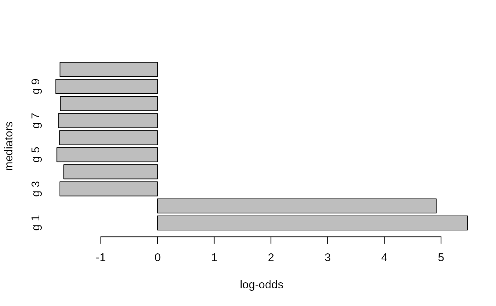

fit.med.zqtl.RdVariational inference of zQTL mediation
fit.med.zqtl(effect, effect.se, effect.m, effect.m.se, X.gwas)
| effect | Marginal effect size matrix (SNP x trait) |
|---|---|
| effect.se | Marginal effect size standard error matrix (SNP x trait) |
| effect.m | Marignal genetic effects of mediators (SNP x mediator) |
| effect.m.se | SE of the marginal genetic effects (SNP x mediator) |
| X.gwas | Design matrix (reference Ind.GWAS x SNP) |
| X.med | Design matrix (reference Ind.MED x SNP) |
| n | sample size of GWAS data (will ignore if n = 0) |
| n.med | sample size of mediation data (will ignore if n.med = 0) |
| multi.C | SNP confounding factors (SNP x confounder; default: NULL)#' |
| factored | Fit factored model (default: FALSE) |
| options | A list of inference/optimization options. |
| multivar.mediator | Multivariate mediator QTL effect (default: FALSE) |
| de.propensity | Propensity sampling to estimate direct effect (default: FALSE) |
| de.factorization | Estimate direct effect by joint factorization (default: TRUE) |
| factorization.model | Factorization model; 0 = ind x factor, 1 = eigen x factor (default: 0) |
| num.strat.size | Size of stratified sampling (default: 2) |
| do.direct.estimation | Estimate direct effect (default: TRUE) |
| do.finemap.direct | Fine-map direct effect SNPs (default: FALSE) |
| nboot | Number of bootstraps followed by finemapping (default: 0) |
| nboot.var | Number of bootstraps for variance estimation (default: 100) |
| scale.var | Scaled variance calculation (default: FALSE) |
| do.var.calc | variance calculation (default: FALSE) |
| num.duplicate.sample | Duplicate number of independent components (default: 1) |
| num.conditional | number of conditional models |
| submodel.size | size of each conditional model |
| do.hyper | Hyper parameter tuning (default: FALSE) |
| do.rescale | Rescale z-scores by standard deviation (default: FALSE) |
| tau | Fixed value of tau |
| pi | Fixed value of pi |
| tau.lb | Lower-bound of tau (default: -10) |
| tau.ub | Upper-bound of tau (default: -4) |
| pi.lb | Lower-bound of pi (default: -4) |
| pi.ub | Upper-bound of pi (default: -1) |
| tol | Convergence criterion (default: 1e-4) |
| gammax | Maximum precision (default: 1000) |
| rate | Update rate (default: 1e-2) |
| decay | Update rate decay (default: 0) |
| jitter | SD of random jitter for mediation & factorization (default: 0.01) |
| nsample | Number of stochastic samples (default: 10) |
| vbiter | Number of variational Bayes iterations (default: 2000) |
| verbose | Verbosity (default: TRUE) |
| k | Rank of the factored model (default: 1) |
| svd.init | initialize by SVD (default: TRUE) |
| print.interv | Printing interval (default: 10) |
| nthread | Number of threads during calculation (default: 1) |
| eigen.tol | Error tolerance in Eigen decomposition (default: 0.01) |
| do.stdize | Standardize (default: TRUE) |
| out.residual | estimate residual z-scores (default: FALSE) |
| min.se | Minimum level of SE (default: 1e-4) |
| rseed | Random seed |
a list of variational inference results.
param.mediated: parameters for the mediated effects
param.unmediated: parameters for the unmediated effects
param.intercept: parameters for the intercept effect
param.covariate: parameters for the multivariate covariate
param.covariate.uni: parameters for the univariate covariate
bootstrap: bootstrapped mediated parameters (if nboot > 0)
llik: log-likelihood trace over the optimization
Mediation analysis
n = 500 p = 1000 n.genes = 10 h2 = 0.8 n.causal.direct = 1 n.causal.qtl = 3 n.causal.gene = 2 set.seed(13) .rnorm <- function(a, b) matrix(rnorm(a * b), a, b) X.raw = sapply(1:p, function(j) { f = runif(1, min = 0.1, max = 0.9) rbinom(n, 2, f) }) X = scale(X.raw) c.qtls = matrix(sapply(1:n.genes, function(j) matrix(sample(p, n.causal.qtl))), nrow = n.causal.qtl) theta.snp.gene = .rnorm(n.causal.qtl, n.genes) / n.causal.qtl gene.expr = lapply(1:dim(c.qtls)[2], function(j) X[, c.qtls[,j], drop = FALSE] %*% theta.snp.gene[, j, drop = FALSE] + 0.5 * rnorm(n) ) gene.expr = do.call(cbind, gene.expr) theta.med = sample(c(-1,1), n.causal.gene, TRUE) causal.direct = sample(p, n.causal.direct) theta.dir = matrix(rnorm(n.causal.direct), n.causal.direct, 1) / n.causal.direct y = gene.expr[,1:n.causal.gene,drop = FALSE] %*% theta.med # mediation y = y + X[, causal.direct, drop = FALSE] %*% theta.dir # direct y = y + rnorm(n) * c(sqrt(var(y) * (1/h2 - 1))) eqtl.tab = calc.qtl.stat(X, gene.expr)#>#> #>#> #> #>#> #> #>#>gwas.tab = calc.qtl.stat(X, y) xg.beta = eqtl.tab %>% dplyr::select(x.col, y.col, beta) %>% tidyr::spread(key = y.col, value = beta) %>% (function(x) as.matrix(x[1:p, -1])) xg.se = eqtl.tab %>% dplyr::select(x.col, y.col, se) %>% tidyr::spread(key = y.col, value = se) %>% (function(x) as.matrix(x[1:p, -1])) xy.beta = gwas.tab %>% dplyr::select(x.col, y.col, beta) %>% tidyr::spread(key = y.col, value = beta) %>% (function(x) as.matrix(x[1:p, -1])) xy.se = gwas.tab %>% dplyr::select(x.col, y.col, se) %>% tidyr::spread(key = y.col, value = se) %>% (function(x) as.matrix(x[1:p, -1])) vb.opt = list(nsample = 10, vbiter = 3000, rate = 1e-2, gammax = 1e3, do.stdize = TRUE, pi = -0, tau = -4, do.hyper = FALSE, eigen.tol = 1e-2, tol = 1e-8, verbose = TRUE, print.interv = 200, multivar.mediator = FALSE) med.out = fit.med.zqtl(effect = xy.beta, effect.se = xy.se, effect.m = xg.beta, effect.m.se = xg.se, X.gwas = X, options = vb.opt) barplot(height = med.out$param.mediated$lodds[, 1], names.arg = paste('g',1:n.genes), horiz = TRUE, xlab = 'log-odds', ylab = 'mediators')